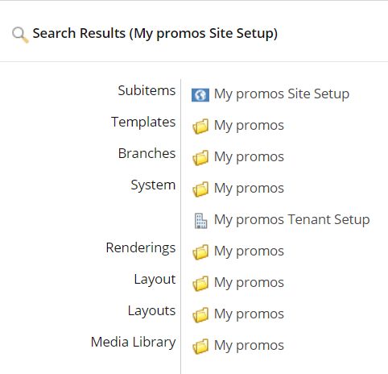

Create a new SXA module
Extend SXA by adding a module.
An SXA module consists of templates, branches, settings (to store scaffolding items), media library items, renderings, layouts, and so on. Default SXA modules include the rendering sections and grid systems. SXA modules are stored in the Feature or Foundation folder:
/sitecore/System/Settings/Foundation/Headless Experience Accelerator/
/sitecore/System/Settings/Feature/Headless Experience Accelerator/
You might want to create a new module, for example, to add a new section in the Toolbox for custom renderings, to add a base template to extend one of the site items and use custom fields, or to invoke a script during site creation.
To add a new module:
Navigate to sitecore/System/Settings, right-click Features or Foundation, click Insert, and then click Module.
Note
Do not place your custom modules in the Headless Experience Accelerator folder. This folder is overwritten during updates.
In the Create new module dialog box, fill in the following fields:
Field
Description
Module name
Enter a name for the new module. This name is used as the folder name for the system areas selected.
Add to module group
Select the module folder this module belongs to.
System areas
Select the system areas for which container folders should be created.
Module scaffolding actions
To install the new module with SXA scaffolding, select Site Collection Setup and/or Site Setup.
Click Proceed.
Your module is now added and ready for you to customize by adding templates, branches, settings (scaffolding configurations) media library items, renderings, layouts, and so on.
Depending on which system areas you selected, there are folders in the Media Library, Templates, Branches, Renderings, Layout, or Layouts sections.
